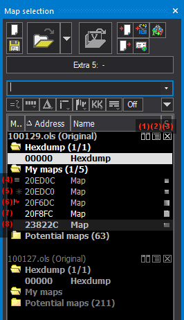

|
The dialog Map selection (Menu Window) |

  
|
|
The dialog Map selection (Menu Window) |
|
 |
Symbol legend:
|
This dialog displays an overview of all open projects and their windows and allows you to duplicate and delete windows.
Button double-line:
The buttons in this line correlate with the items in the main menu. Each has a tooltip for explanation.
Session button:
The wide session button allows changing the active session.
Search line:
u Video |
The search line filters the entries in the list (either for the current project or for all projects). Only maps with the text in the name or id are shown. Apart from a search text, you can also enter the following commands into the combo-box:
| · | Bit width: 8, 16, 32 |
| · | Dimension: 0dim, 1dim, 2dim |
| · | Exact size or size range: 16x32, 16x20-32 |
| · | Map address: e.g. 0x800a |
| · | Map groups ids: e.g. #2 |
| · | -Negative: Type a minus sign in front of a word to exclude all maps that contain this word from the results. |
| · | "exact words": Putting words into quotation marks to search for projects that contain these words in exactly this way (and not just the individual words). |
| · | "one/ortheother": Separating words with a slash (or the word "or") means that it's okay if only one item in this group is found. |
Filter button line:
The filter-buttons left of the black triangle are shortcuts to the filter submenus.
A mouse-click on the black triangle will open a small menu with additional commands for this dialog:
| · | You can export the list into a CSV file. (Same function as in the Project / Export Menu) |
| · | You may search the map list for a specific map |
| · | You may show or hide a column. (Note: The column Id is useful if you're importing Damos or A2L maps.) |
| · | You can show / hide maps according to their bit width. You may specify a certain bit width or you can tell WinOLS to show only the maps that have the same bit width that the hexdump window currently has. |
List:
A line in bold type symbolizes an open window. The text color shows (just like inside a window) whether the window contains any changes compared to its original version. The windows inside the list can be opened, closed, deleted or duplicated with a context menu (right mouse button). Double-click a line to open / close the window.
If you click the icon near the project or with the context menu you may hide windows from the list. This is useful when you have a large number of windows. Hidden windows are normally not displayed in the list. If you right-click a project in this window you may configure whether the maps are displayed even though they are marked as hidden, for example if you want to un-hide them. Maps that appear in the list even though they are hidden can be recognized by their faded color. (You can configure the hiding strategy at Miscellaneous > Configuration > Miscellaneous > Edit.)
Special clicks in the list:
| · | Click in the first column in order toggle a flag for marking purposes. The flag is for your reference only. |
| · | Click in the project line on the fold icon to reduce the entire project to one line. Click on the X icon to close the project |
| · | Click+Hold in the project line an drag it to an Explorer or Outlook window to export. |
| · | Click+Hold in the project line an drag onto another project line to connect the projects. |
| · | Right-click the list's headline to select the columns. |
Modal + Docking:
This dialog is not modal, meaning that windows lying behind the window may still be used. The size of the dialog may be configured. The window may be (un-)docked by doubleclicking the headline / title. This dialog may be (depending on your configuration) a "floating" dialog. All floating dialogs can be toggled with the tab key.
Shortcuts
Symbol bar:
Keyboard: Ctrl+K